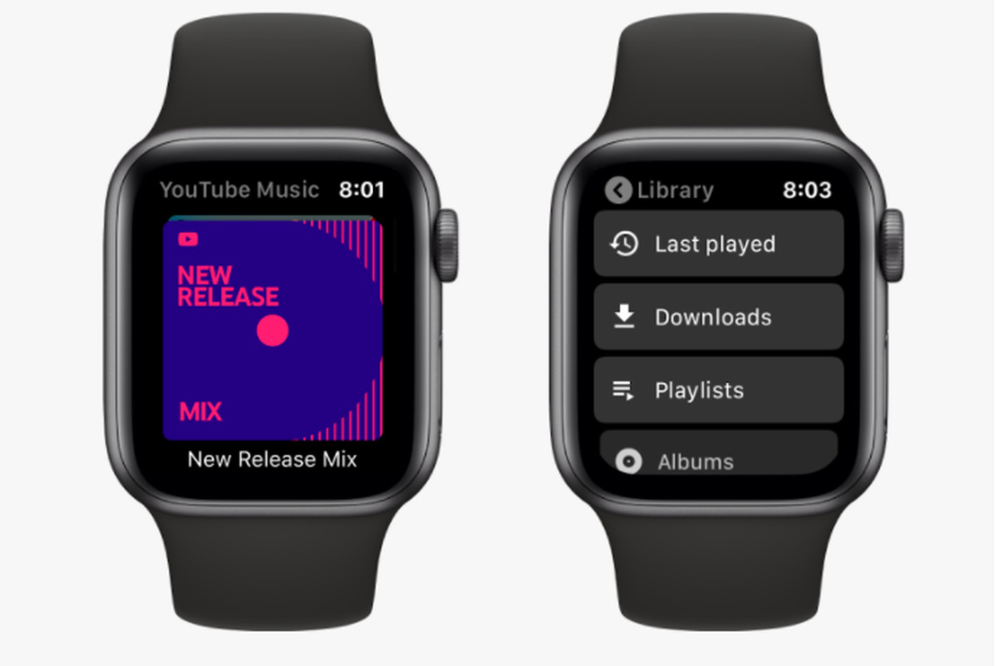
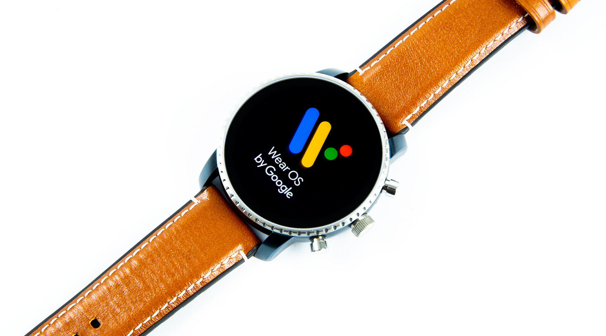

Google
Google, remind me to call Roy at work", or "Remind me to baste the chicken in 25 minutes" the user can create location and time-based reminders, set alarms, timers etc. which appear on the watch at the appropriate time or place.[10]
Many applications have been released, with developers such as Evernote etc. creating new functionality on the watch: for instance, handing off notes to the watch screen when the user turns off their phone screen. Location-based applications like Foursquare show suitable nearby venues, allow check-in


2015
